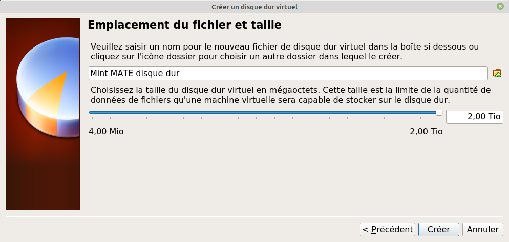
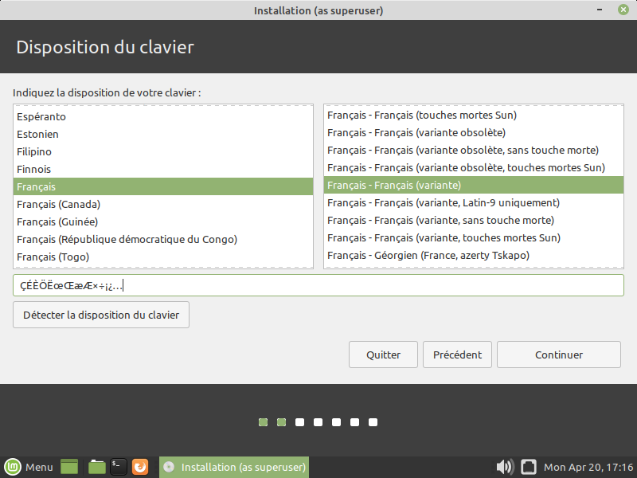
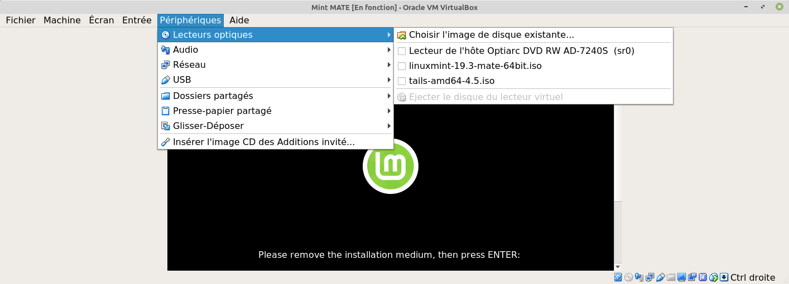

Virtualisation système
- Auteur
- 📩 Franck CHAMBON, enseignant au lycée Lucie AUBRAC de Bollène (84).
- Licence
- 🆓 Les documents suivants sont placés sous licence libre CC - BY-NC-SA 4.0 :
- Ils sont accessibles gratuitement.
- Ils peuvent être modifiés, adaptés, étoffés, quitte à citer les différents auteurs.
- Leur utilisation commerciale n'est pas acceptée.
![Licence CC-BY-NC-SA-4.0]( "Licence")
Premières expériences de virtualisation en première NSI.
La virtualisation système consiste, en informatique, à exécuter sur une machine hôte, dans un environnement isolé, des systèmes d'exploitation.
- La machine hôte sera votre ordinateur, au lycée ou à la maison.
- Les systèmes d'exploitations seront libres, conformément au programme du B.O. ; et il n'y a pas que Linux...
Si certains mots vous semblent inconnus, les définitions arrivent...

Exemple : Trois machines virtuelles invitées dans une machine hôte Linux Mint. On peut y observer des versions différentes de Python3 qui y sont installées.
Sommaire
- Pourquoi virtualiser ?
- Comment virtualiser ?
- Vocabulaire
- Installation de VirtualBox
- Présentation de Linux
- Création d'une machine virtuelle
- 1er Démarrage en live
- Installation virtuelle
- Quelques systèmes à tester
Pourquoi virtualiser ?
-
Pour l'élève en NSI :
- C'est un bac à sable pédagogique pour les premières installations d'un système d'exploitation.
- Découvrir Linux, et être administrateur d'une machine.
- Faire des expériences sans conséquences en cas de mauvaises manipulations.
- Travailler à la maison dans les conditions prévues par le B.O. en NSI.
-
Pour les professionnels :
- Préparer son développement web.
- Faire des tests variés, du partage de ressources, de la sécurisation de réseau, du déploiement ...
- Faire des économies d'énergies, et d'autres raisons encore.
Comment virtualiser ?
Il existe plusieurs techniques de virtualisation, et donc plusieurs logiciels :
- Boxes ; libre, très simple pour débuter, mais uniquement sous Linux.
- KVM ; libre, uniquement pour Linux.
- QEMU ; libre et multiplateforme, mais plus performant actuellement avec Linux.
- VMware ; non libre, uniquement pour Windows.
- Virtual Machine Manager ; libre, technique, uniquement pour les administrateurs Linux.
- VirtualBox ; notre choix ici.
- VirtualPC ; non libre, uniquement pour Mac et Windows.
Nous utiliserons VirtualBox ; un logiciel libre et multiplateforme qui a des performances correctes, et homogènes.
On pourra alors installer un système d'exploitation libre de type Linux (ou non).
Vocabulaire
- Machine hôte (Host)
- 💻 C'est l'ordinateur physique qui va "héberger" une ou plusieurs machines virtuelles.
Votre ordinateur actuel sera prêt si vous disposez d'au moins 1 Go de mémoire vive disponible, et 20 Go de place sur votre disque dur.
- Système hôte
- 💽 C'est le système d'exploitation (Operating System ; O.S.) de la machine hôte.
VirtualBox est multiplateforme, vous pouvez l'installer avec un système hôte Windows, Linux ou MacOS.
- Machine invitée (Guest)
- C'est la machine virtuelle qui sera allouée et gérée par l'hyperviseur VirtualBox.
Cette machine aura un disque dur virtuel, un lecteur DVD virtuel, un écran virtuel, un processeur avec un ou plusieurs cœurs virtuels, etc. Cette machine peut capturer votre souris et votre clavier. On pourra aussi y bricoler virtuellement : ajout/suppression de matériel...
- Système invité
- C'est le système d'exploitation que vous installez sur la machine virtuelle.
🐧 Nous expérimenterons l'installation de différentes versions de Linux comme Debian, Ubuntu, Linux Mint, Manjaro, CentOS, ou Fedora.
🍎 L'installation de versions variées de Windows ou MacOS est possible.
- Les suppléments invités (Guest Additions)
- C'est un pack logiciel à installer sur la machine virtuelle pour optimiser son fonctionnement, comme pour avoir une meilleure résolution d'écran.
⚠️ Ce pack n'est pas un logiciel libre et il est interdit de l'utiliser en entreprise ou à l'Université.
À titre privé, vous avez le droit de l'installer ; nous verrons comment.
Installation de VirtualBox
-
Sur la page de téléchargement du site officiel,
- choisir la version correspondant à votre machine hôte.
-
Dans certains cas, il faudra activer le support de virtualisation.
-
En cas de problème avec la version 6.0 pour Windows,
- vous pouvez tenter la version 5.2 pour Windows.
Bonne installation ...

Premier démarage du logiciel : VirtualBox sans aucune machine virtuelle.
Présentation de Linux
Linux est un noyau de systèmes d'exploitation pour :
- passerelle domestique (Box Internet) ;
- objet connecté comme Raspberry Pi ;
- smartphone basé sur Android ;
- ordinateur personnel, (alternative libre à Windows) ;
- la majorité des serveurs informatique ;
- presque tous les supercalculateurs ;
- ordinateur d'entreprise sécurisé : banque, armée, ...
Distribution Linux
Une distribution Linux propose :
- un noyau Linux plus ou moins récent, parfois expérimental, parfois très stable ;
- un ensemble de logiciels plus ou moins complet ;
- un gestionnaire de paquets pour en installer d'autres; et poursuivre les mises à jour ;
- d'autres services comme de la documentation, un forum.
Exemples : Manjaro, Linux Mint, Debian, Ubuntu, Fedora, CentOS, Arch.
Le noyau Linux
Le noyau Linux a été créé en 1991 par Linus Torvalds.
Ses caractéristiques principales sont d'être multitâche et multi-utilisateur. Il respecte les normes POSIX ce qui en fait un digne héritier des systèmes UNIX.
- Il est écrit essentiellement en langage C,
- par des milliers de bénévoles et salariés,
- en travail collaboratif sur Internet.
Les logiciels disponibles
- Des navigateurs web : Mozilla Firefox, Chromium, ...
- Des applications multimédia : VLC, OBS, ...
- Des suites bureautiques comme LibreOffice ;
- Des outils graphiques : GIMP, Pinta, MyPaint, Inkscape, Krita ...
- Des interpréteurs pour les langages Bash, Python, OCaml, ...
- Des compilateurs pour les langages C, C++, java, ...
- Des éditeurs de texte, et des environnements de développement intégré, ...
- De nombreux logiciels éducatifs comme GeoGebra, GCompris, Stellarium, ...
- Mais aussi des jeux ...
Les gestionnaires de paquets
Ils permettent de gérer les mises à jour et l'installation de logiciels via des paquets :
dpkgavec le format .deb, pour Debian, Ubuntu, Linux Mint, ...rpmavec le format .rpm, pour Red Hat, Fedora, CentOS, ...- pacman est le gestionnaire pour Manjaro, Arch, ...
- snapcraft est un nouveau gestionnaire pour les paquets les plus récents. À suivre s'il survit...
Les environnements de bureau
Un environnement de bureau est un ensemble de logiciels qui donne une cohérence graphique à l'ensemble d'une distribution et en permet le réglage.
Exemples basés sur GTK : GNOME, Cinnamon, Xfce, ...
Exemples basés sur Qt : KDE, LXQt, ...
GTK et Qt sont des bibliothèques graphiques, un ensemble d'outils.
Quelques exemples de distributions
DistroWatch présente les distributions populaires.
Chaque distribution peut proposer plusieurs gestionnaires de bureaux.
Exemples :
- Manjaro : avec Xfce ; lien direct
- Linux Mint : avec Cinnamon ; lien direct
- Fedora : avec GNOME ; lien direct
- Debian : avec KDE ; lien direct
- Ubuntu avec LXQt ; lien direct
Il faudra télécharger une image disque (fichier .iso) de 1, 2 ou 3 Go.

Parrot OS, une distribution orientée sécurité et hack.
Création d'une machine virtuelle
On poursuit ici l'expérience avec Linux Mint MATE 64-bit.
Mint est, par défaut, basée sur Ubuntu qui, elle-même est basée sur Debian.
- On télécharge l'image disque de 2 Go.
- Avec le nœud BitTorrent Transmission, ou
- avec le miroir de téléchargement de son choix.
- On vérifie l'intégrité du téléchargement.
- C'est optionnel ici ; uniquement pour un test.
- C'est important en production ; sécurité !
- Un torrent est auto vérifié ; bonne pratique.
- On dispose d'une image disque :
- elle pourrait être gravée sur un DVD,
- on pourrait créer une clé USB bootable avec,
- plaçons-la dans une machine virtuelle !
On utilise VirtualBox :
- On crée une nouvelle machine ; Ctrl+N ;
- On l'appellera
Mint MATE
- On offre au moins 1024 Mo de mémoire vive, 2048 Mo de préférence, pour la machine invitée.

- On crée un disque dur virtuel maintenant, de type VDI, dynamiquement alloué.
- On modifie son nom, et on choisit une taille de 20Go au moins. On peut même choisir le maximum ; c'est dynamiquement alloué donc seul l'espace nécessaire sera pris.

Notre machine virtuelle est créée, elle possède :
- un procésseur virtuel,
- de la mémoire virtuelle,
- une carte vidéo virtuelle et sa mémoire,
- une carte réseau, une carte sons, des ports USB, ...
- un lecteur DVD virtuel vide,
- un disque dur virtuel vide !
Dans la configuration ( Ctrl+S ) de cette machine, on va insérer notre disque virtuel téléchargé.
- Dans
stockage, on clique survidedans le contrôleur IDE, puis (à droite) dans attributs, lecteur optique, - on clique sur l'icône de DVD à droite et son menu...
Choisissez un fichier de disque virtuel; - on sélectionne notre fichier image .iso qui a été téléchargée.

On peut fermer la configuration et démarrer la machine virtuelle.
- Elle va booter sur le DVD virtuel pour la première fois.
- On va installer le système sur le disque virtuel.
- On retirera le DVD virtuel.
- Aux redémarrages suivants, la machine bootera sur le disque dur.
- Notre machine sera prête !
1er Démarrage en live

Au bout de quelques secondes, Linux Mint démarrera ; on peut aussi appuyer sur Entrée.
- Notre clavier sera capturé dans la machine virtuelle,
- on peut voir l'écran virtuel de démarrage.
- La souris sera également capturée.
- On pourra cocher 'ne plus afficher ce message'.
Start Linux Mint.
Quand La machine a fini de booter :
- On peut la tester, ses logiciels, ses paramètres, ...
- On va installer cet O.S. sur le disque dur virtuel.


Cette machine invitée est une application parmi d'autres du système hôte.
-
On peut agrandir la fenêtre de VirtualBox à presque tout l'écran.
- Dans ce cas, attention à ne pas confondre les deux menus de démarrage.
-
Dans le menu de VirtualBox, on peut aussi choisir
Écran, puisMode plein écran.- ⚠️ Attention, pour en sortir, on pourra déplacer notre souris tout en bas de l'écran, pour faire apparaître le menu de la machine virtuelle.
Il y a un raccourci clavier qui pourrait être Ctrl(droit)+F .
Dans ce cas, la touche Ctrl(droit) est votre touche Host.
Installation virtuelle
Il vaut mieux ici être en mode plein écran (ou presque).
- On double clique (ou bien un seul clic + Entrée) sur
Install Linux Mint - On répond à la langue que l'on souhaite pour l'installation ; c'est au choix !
- On choisit son fuseau horaire.
- On choisit sa disposition de clavier. ⚠️ Attention, il vaut mieux choisir
Français (variante).
Explications complètes à venir... On pourra écrire très facilement les caractères ÇÉÈÖËœŒæÆ×÷¡¿…

Français (variante) (ou French (alt.)) est un très bon choix.
Ensuite, vous avez le droit d'installer les logiciels tiers propriétaires mais ils sont inutiles ici.
⚠️ ⚠️ ⚠️ Pour une première installation avec VirtualBox seulement !!! ⚠️ ⚠️ ⚠️
On peut effacer le disque et installer Linux Mint.
✅ Le disque dur en question est le disque virtuel ; aucun problème, il est vide.
Quand vous ferez une installation sur une machine réelle, soyez prudent, ce sera peut-être différent.

- On choisit le bon fuseau horaire.
- On entre les paramètres de l'administrateur.
- Majuscules et espaces possibles pour le nom.
- Majuscules et espaces déconseillées pour le nom de la machine. Tiret bas (
_) possible. - Majuscules et espaces interdites pour le nom d'utilisateur (login).
- On note soigneusement un bon mot de passe.
- Pour un premier test, on peut choisir :
Se connecter automatiquement.

⚠️ Pour qui tente l'installation de Linux Mint Debian Edition, une autre étape technique est :
On continue avec l'installation du chargeur de démarrage GRUB. C'est lui qui donne un menu quand plusieurs systèmes d'exploitation sont disponibles au moment du boot.
- Ici, on laisse le choix par défaut.
/dev/sdadésignera le descripteur de notre unique disque virtuel.devest un répertoire Linux en lien avec les périphériques (devices).sdaest le premier disque dur branché en SCSI sur la carte mère. (more info in english)

L'installation va prendre plusieurs minutes.
Une fois l'installation terminée :
- On peut redémarrer cette machine virtuelle et la faire booter sur le disque dur virtuel au lieu du DVD virtuel. Il faut bien éjecter le DVD virtuel avant le redémarrage. C'est souvent automatique (mais pas toujours). Sinon, on booterait à nouveau sur le DVD prêt à refaire une installation...
- Pour vérifier que le DVD a bien été éjecté, aller dans le menu
Périphériquesde la machine virtuelle, puis danslecteurs optiques.

Rien n'est coché ; c'est bon !
Quelques systèmes à tester
- Linux Mint 19.3, fortement recommandée, basée sur
Ubuntu, utilise le bureauCinnamon. - MX Linux, basée sur
Debian (stable), utilise le bureauXFCE. Succès récent. - Manjaro, basée sur
Arch, utilise le bureauXFCE,KDE, ou d'autres... Idéale pour tester KDE. - Ubuntu 20.04, basée sur
Debian. Idéale pour tester le bureauGnome. - elementary OS, basée sur
Ubuntu, utilise le bureauPantheon. Jolie ! - CentOS, basée sur
FedoraetRed Hat, utilise le bureauGnomeouKDE. Utilisée dans l'industrie. - ReactOS, un clone libre de Windows XP. Ici, ce n'est pas Linux !
- SparkyLinux, basée sur
Debian (stable ou non !!!), rapide et légère. - Tails, pour tester un live, objectif préservation de la vie privée et de l'anonymat.
- Lubuntu 20.04 Focal Fossa, basée sur
Ubuntu, utilise le bureauLXQttrès léger. - Parrot, basée sur
Debian (testing), utilise le bureauMATEouKDE, pour les hackers. - FreeDOS, un clone libre de MS-DOS, pour le retro-gaming en particulier.
Beaucoup de distributions Linux proposent plusieurs bureaux au choix. Testez-en plusieurs !